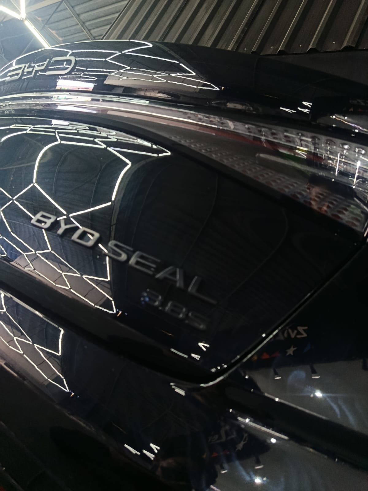
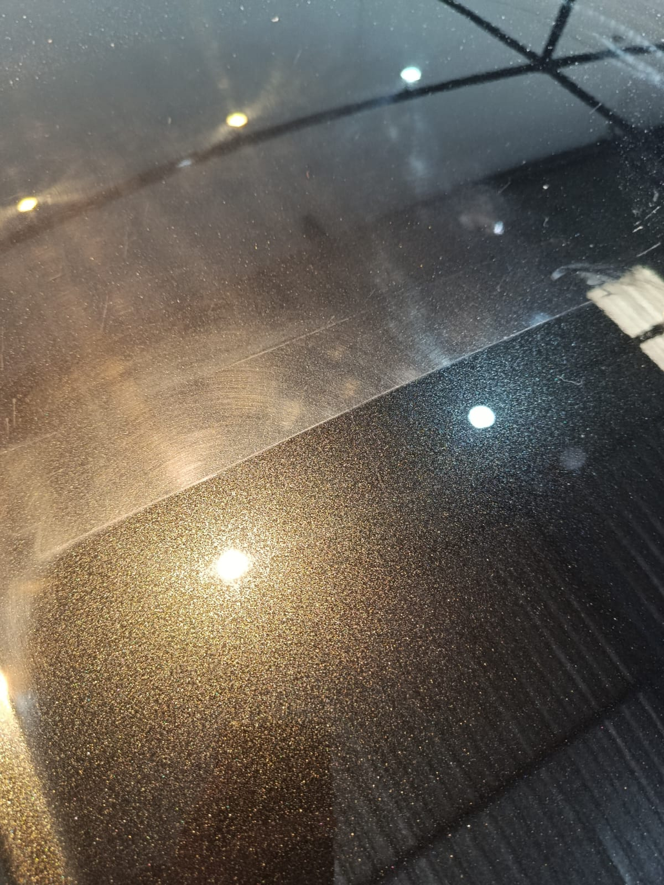
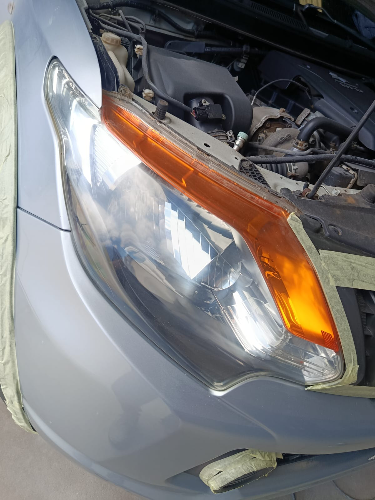
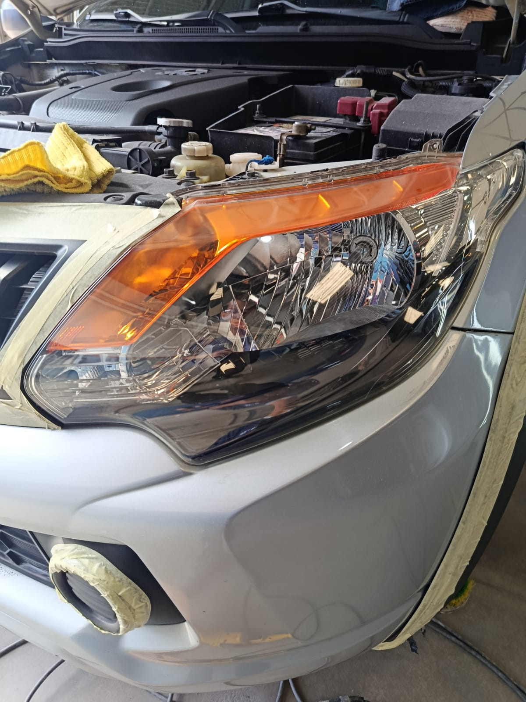
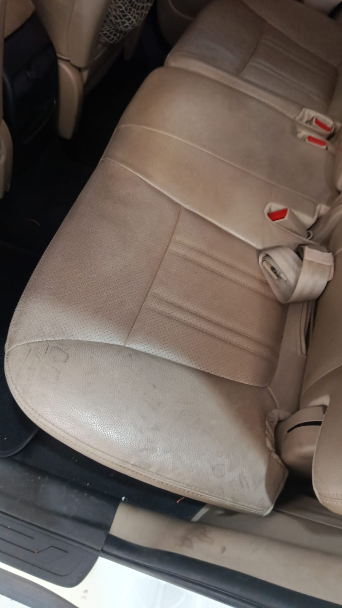
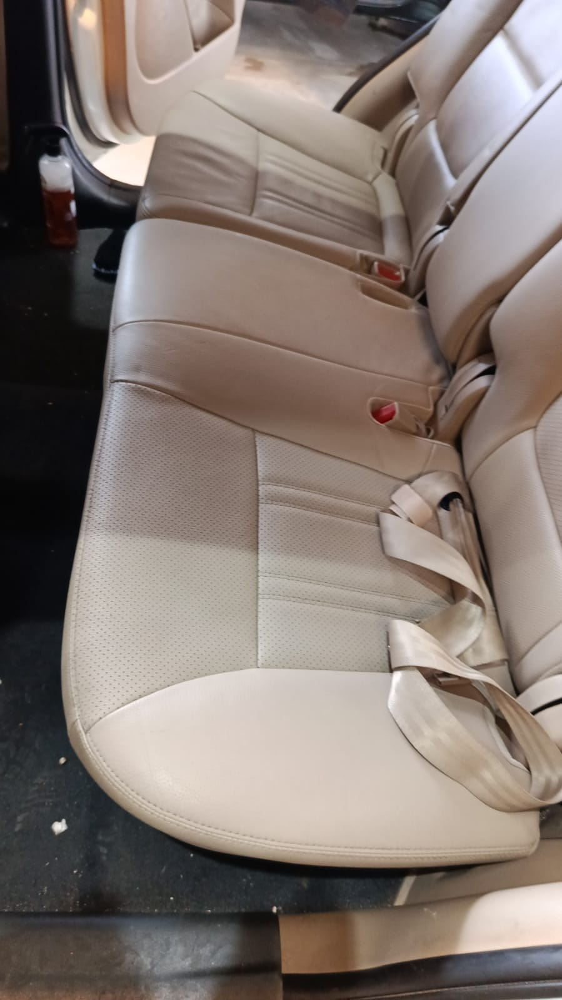
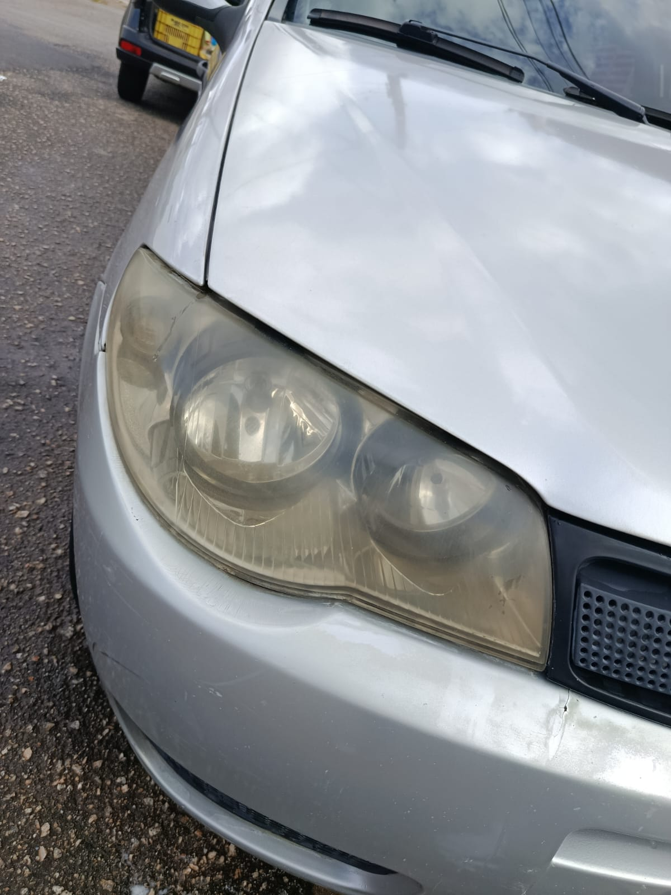
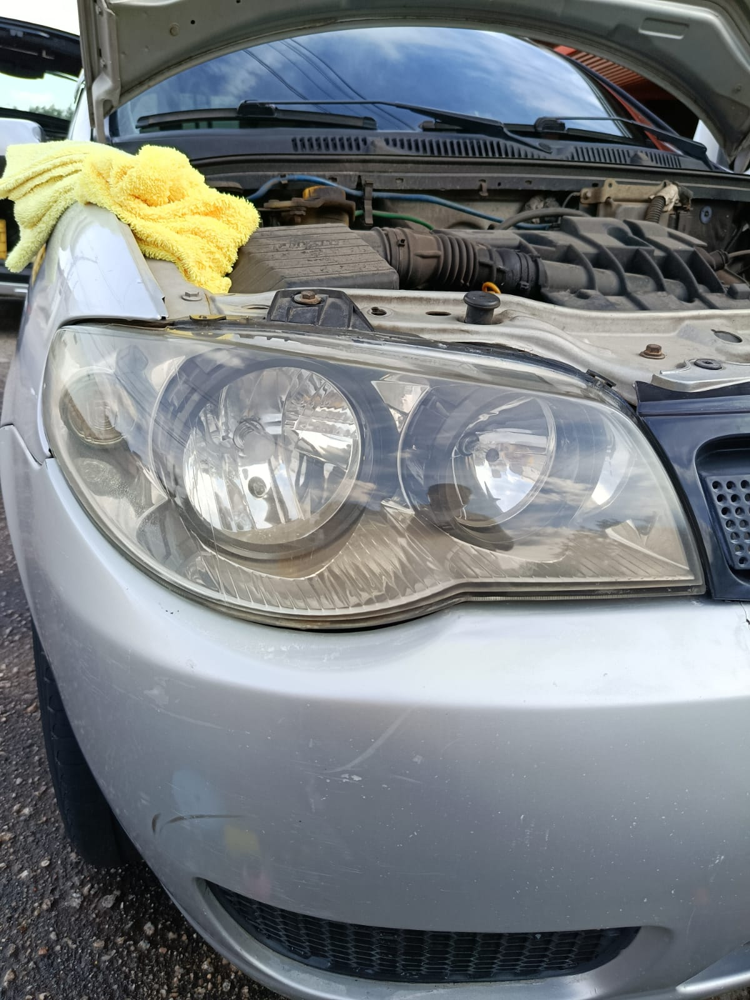
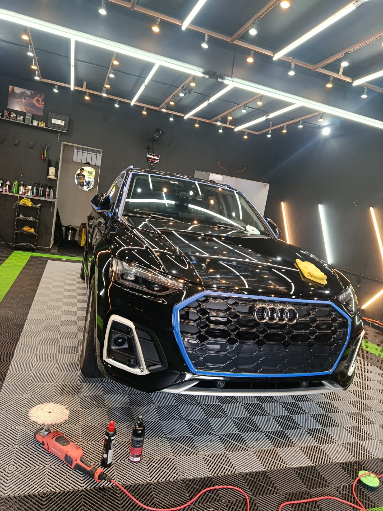

Polimento técnico, vitrificação e detalhamento com padrão de concessionária — sem sair da garagem do seu condomínio.
Moramos e trabalhamos aqui: entendemos que seu tempo é o ativo mais escasso. Por isso o serviço vai até você — no conforto de casa, com a mesma técnica e produtos de um estúdio especializado.
Do polimento técnico à proteção cerâmica de longa duração — cada etapa pensada para valorizar e proteger seu patrimônio.

Proteção Easytech com até 1 ano de durabilidade contra raios UV, chuva ácida e maresia — brilho de concessionária que dura.

Correção de pintura com descontaminação prévia, removendo marcas e microrriscos para uma superfície espelhada pronta para proteção.
Resultados reais de recuperação estética, restauração óptica e higienização profunda executados pela equipe Samurai.

Antes
Depois
Antes
Depois
Antes
Depois"Carro saiu igual de fábrica. Nem parecia o mesmo veículo depois do polimento."
"Atendimento em casa foi o diferencial — não precisei sair, nem me preocupar com nada."
"Sempre dá show no meu carro. Trabalho detalhista, do jeito que a gente exige."

A Samurai nasceu da convicção de que cuidar de um carro é um ato de exigência — cada camada de trabalho exposta, cada detalhe cobrado como se fosse o próprio patrimônio em jogo.
Atendemos Sorocaba e região com foco em quem valoriza tempo e padrão: entregamos o resultado de um estúdio especializado direto na garagem do seu condomínio.
Atendimento móvel nos principais bairros e condomínios fechados de Sorocaba e entorno: